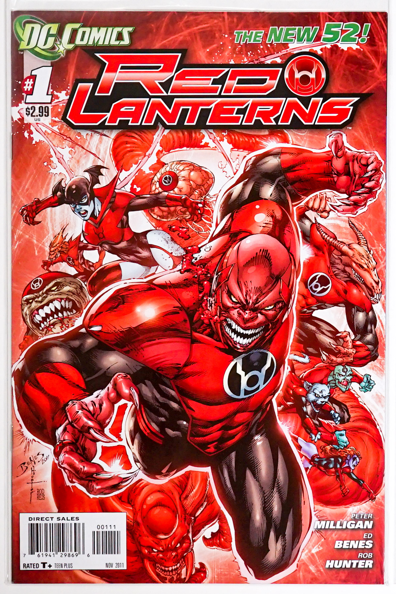
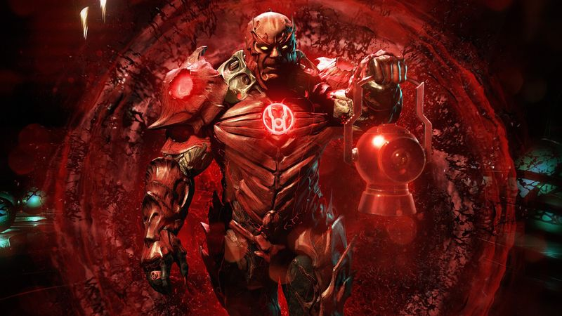
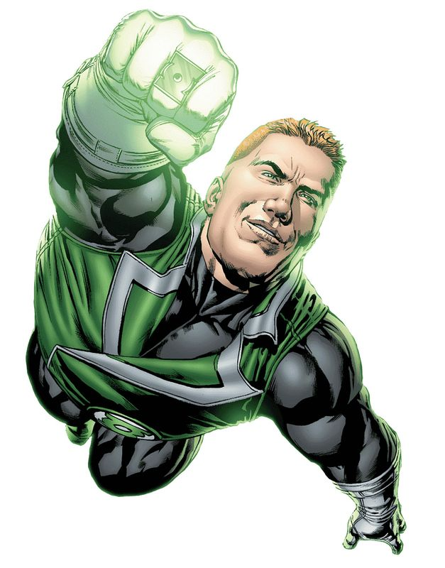
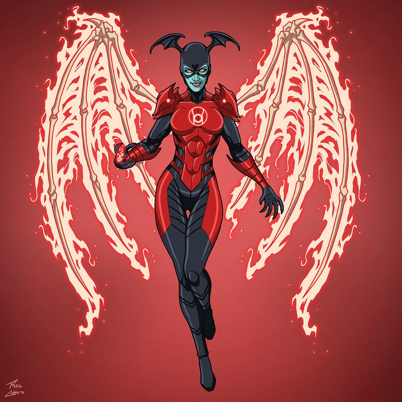

Reading Order
Red Lanterns
Rage gets its own book — and Guy Gardner gets a red ring.

2011 – 2015
Collected in Red Lanterns: Blood and Rage and subsequent volumes.
The story
For the first time, the Red Lantern Corps headlined their own ongoing series. Peter Milligan opened with Atrocitus at his most terrifying — a prophet of rage building an army from the universe's most wronged souls, including the fierce Bleez, whose hatred of her tormentors made her his deadliest lieutenant.
Then Charles Soule took over and did the unthinkable: he gave a red ring to Guy Gardner. The most volatile Green Lantern became the Red Lanterns' leader, and Soule turned the book into a study of whether rage can be aimed — whether the Corps' fury could serve justice instead of just vengeance.
Essential for understanding the Red Lanterns as more than monsters — and for Guy Gardner's wildest character arc.
Key characters

AtrocitusThe prophet of rage
Guy GardnerThe Red Lantern
BleezThe lieutenantCover: DC Comics — non-commercial fan tribute.